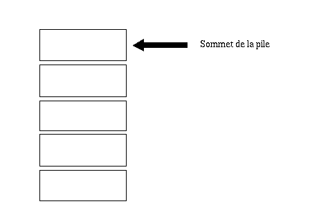
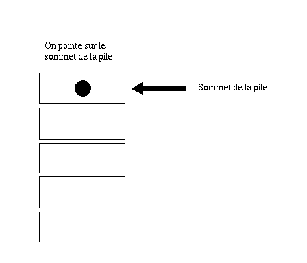
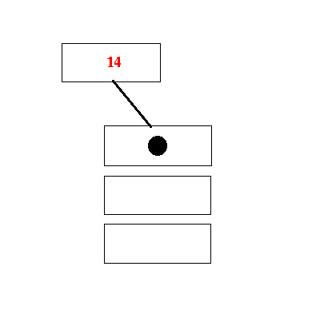
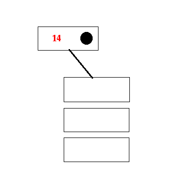

En plus des tableaux, les piles ainsi que les files constituent un bon moyen de stocker diverses données en langage C. Dans ce tutoriel, nous verrons à quoi cela correspond et comment nous en servir.
Les piles (stack) et les files (queue) constituent des structures de données. Elles vont, comme leur nom l'indique, nous permettre de stocker diverses données, comme pourrait le faire un tableau.
Une pile permet de réaliser ce que l'on nomme une LIFO (LLast In First Out), ce qui signifie en clair que les derniers éléments à être ajoutés à la pile seront les premiers à être récupérés. Il est possible de comparer cela à une pile d'assiettes. Lorsqu'on ajoute une assiette en haut de la pile, on retire toujours en premier celle qui se trouve en haut de la pile, c'est-à-dire celle qui a été ajoutée en dernier, sinon tout le reste s'écroule.
Une file, quant à elle, permet de réaliser une FIFO (FFirst In First Out), ce qui veut dire que les premiers éléments ajoutés à la file seront aussi les premiers à être récupérés.
Les piles peuvent être utilisées dans des algorithmes d'évaluation d'expressions mathématiques. Les files peuvent être utilisées afin de mémoriser des données en attente de traitement.
En langage C, l'implémentation des piles est basée sur les listes chaînées. Comment, vous ne savez pas ce que sont les listes chaînées ? Ce n'est pas grave, car vous pourrez lire l'excellent tutoriel rédigé par lexou qui vous permettra alors de vous initier aux listes chaînées.
Vous voilà maintenant avertis, nous allons pouvoir commencer à nous lancer dans l'implémentation de notre pile en langage C.
La structure de la pile
Tout d'abord, nous allons commencer par définir notre structure qui constituera notre pile. Pour notre exemple, nous allons créer une pile d'entiers (int). Comme dit plus haut, notre pile sera basée sur une liste chaînée (simple). Chaque élément de la pile pointera vers l'élément précédent. La liste pointera toujours vers le sommet de la pile. Voici donc la structure qui constituera notre pile :
typedef struct pile
{
int donnee; /* La donnée que notre pile stockera. */
struct pile *precedent; /* Pointeur vers l'élément précédent de la pile. */
} Pile;
Pour avoir une idée de ce à quoi ressemblera notre pile, voici un schéma qui pourra vous aider à mieux la visualiser :

Chaque case représente un élément de la pile. Comme vous le voyez, les cases sont en quelque sorte emboîtées les unes sur les autres.
Néanmoins, ce schéma n'est pas complet. En effet, la position du pointeur n'y est pas représentée. Voici le schéma complet final :

Le pointeur est alors représenté par le jeton noir, figurant tout en haut de le pile, car, rappelez-vous, notre pointeur devra toujours pointer vers le sommet de la pile. Enfin, on peut dire que les piles sont un cas particulier des listes chaînées. En effet, lors de l'ajout d'un nouvel élément, celui-ci se fera en fin de liste. Identiquement, l'élément qui sera effacé en premier sera l'élément se trouvant en fin de liste.
Ajout d'un nouvel élément
Tout d'abord, nous allons voir comment ajouter un élément dans notre pile. Pour cela, nous allons réaliser une fonction pile_push dont voici le prototype :
void pile_push(Pile **p_pile, int donnee);
Il faut alors remarquer que la fonction ne renverra pas la nouvelle pile, c'est pour cela que l'on choisit de passer par un pointeur, ce qui permettra de modifier directement notre pile dans la fonction. Mais, comment l'ajout va-t-il se faire ? Vous allez voir, le principe est simple. Voici les étapes qui vont nous permettre d'ajouter notre élément dans la pile :
1. On crée un nouvel élément de type Pile.
2. On vérifie que l'élément a bien été créé.
3. On assigne à la donnée de cet élément la donnée que l'on veut ajouter.
4. On fait pointer cet élément sur le sommet de la pile.
5. On fait pointer le sommet de la pile sur cet élément.
Maintenant que nous avons l'algorithme, voyons son implémentation (réalisation) en langage C.
1. On crée un nouvel élément de type Pile
Pile *p_nouveau = malloc(sizeof *p_nouveau);
Grâce à malloc, on alloue de la place pour notre nouveau maillon de la pile. Remarquez alors que je n'ai pas mis sizeof Pile dans le malloc mais sizeof *p_nouveau, ce qui revient exactement au même. Cependant, la deuxième forme présente un avantage. En effet, si, par exemple, on modifie le nom de notre structure, il ne sera pas la peine de le modifier dans notre malloc.
2. On vérifie que l'élément a bien été créé
if (p_nouveau != NULL)
{
}
Cette étape consiste tout simplement à vérifier si notre nouvel élément créé est bel et bien utilisable. Il suffit alors de vérifier si l'allocation s'est bien passée, c'est-à-dire si malloc n'a pas retourné NULL.
3. On assigne à la donnée de cet élément la donnée que l'on veut ajouter
p_nouveau->donnee = donnee;
Ici, on assigne tout simplement à p_nouveau->donnee (rappelez-vous la structure) la donnée que l'on passe en paramètre, de manière à ce que l'on puisse la stocker dans la pile.
4. On fait pointer cet élément sur le sommet de la pile
p_nouveau->precedent = *p_pile;
Par cette étape, on commence à attacher notre nouvel élément créé à la pile.
5. On fait pointer le sommet de la pile sur cet élément
*p_pile = p_nouveau;
Enfin, on finalise notre attachement en faisant pointer la pile vers notre élément, ce qui nous permet d'avoir un pointeur vers le sommet de la pile.
En rassemblant toutes les étapes, voici notre fameuse fonction :
Si vous avez du mal à visualiser comment se déroule l'ajout, voici un schéma :

Dans ce schéma, on suppose que l'on veut ajouter la valeur 14 à la pile et que la création du nouvel élément s'est bien passée. Ce schéma vous montre les différentes étapes jusqu'à l'étape 4. Ici, nous pointons sur l'avant-dernier élément de la pile, d'où l'étape 5 pour « monter » le pointeur d'un cran comme ceci :

Retrait d'un élément
Voyons maintenant comment retirer un élément de la pile. L'élément qui sera retiré sera le dernier élément que l'on a ajouté, c'est-à-dire l'élément se trouvant au sommet de la pile. Voici le prototype de notre fonction :
int pile_pop(Pile **p_pile);
À l'instar de la première fonction, cette fonction modifiera aussi directement la pile grâce à un pointeur. La fonction renverra la valeur de l'élément qu'elle a dépilée. Regardons désormais les différentes étapes nous permettant de retirer un élément :
1. Vérifier si la pile n'est pas vide.
2. Si elle ne l'est pas, stocker dans un élément temporaire l'avant-dernier élément de la pile.
3. Stocker dans une variable locale la valeur étant stockée dans le dernier élément de la pile.
4. Supprimer le dernier élément.
5. Faire pointer la pile vers notre élément temporaire.
6. Retourner la valeur dépilée.
Dans cette fonction, on retrouve une étape en plus, car notre fonction doit retourner une valeur de type int. Passons maintenant à l'implémentation.
1. Vérifier si la pile n'est pas vide
if (*p_pile != NULL)
{
}
Ici, il suffit juste de vérifier si la pile n'est pas un pointeur NULL. Si ce n'est pas le cas, la pile n'est pas vide.
2. Si elle ne l'est pas, stocker dans un élément temporaire l'avant-dernier élément de la pile
Pile *temporaire = (*p_pile)->precedent;
Rappelez-vous, nous pointons toujours vers le dernier élément de la pile, donc l'élément précédent est l'avant-dernier élément de la pile.
3. Stocker dans une variable locale la valeur étant stockée dans le dernier élément de la pile
ret = (*p_pile)->donnee;
Nous voulons retourner la valeur de l'élément que nous allons supprimer, il est donc nécessaire de la récupérer avant de supprimer cet élément. N.B. : la variable ret sera déclarée en haut de la fonction et initialisée à -1.
4. Supprimer le dernier élément
free(*p_pile), *p_pile = NULL;
La pile pointe sur le dernier élément, il suffit donc d'utiliser free pour supprimer le dernier élément. De plus, après chaque free, il ne faut pas oublier de remettre le pointeur à NULL.
5. Faire pointer la pile vers notre élément temporaire
*p_pile = temporaire;
Afin de « mettre à jour » notre pile, on la fait pointer sur notre élément temporaire qui est l'avant-dernier élément de la pile.
6. Retourner la valeur dépilée
return ret;
Il suffit tout simplement d'utiliser l'instruction return pour retourner la valeur de l'élément que l'on vient de supprimer.
Voici donc notre fonction complète :
int pile_pop(Pile **p_pile)
{
int ret = -1;
if (p_pile != NULL)
{
Pile *temporaire = (*p_pile)->precedent;
ret = (*p_pile)->donnee;
free(*p_pile), *p_pile = NULL;
*p_pile = temporaire;
}
return ret;
}
Vidage de la pile
Nous allons maintenant étudier notre dernière fonction ensemble. Il s'agit de la fonction permettant d'effacer la pile. Voici son prototype :
void pile_clear(Pile **p_pile);
Comme vous l'aurez sans doute deviné, cette fonction modifie aussi directement la pile. Malgré tout, cette fonction se réalise en seulement deux étapes :
1. Tant que la pile n'est pas vide.
2. Effacer le dernier élément de la pile.
Voici le code en langage C…
1. Tant que la pile n'est pas vide
while (*p_pile != NULL)
{
}
Ici, il suffit tout simplement de réaliser une boucle while pour vérifier si la pile est vide ou pas.
2. Effacer le dernier élément de la pile
pile_pop(p_pile);
Grâce à la fonction pile_pop que nous venons de créer, on efface le dernier élément de la pile. Ainsi, tous les éléments sont effacés un par un. Voici la fonction finale :
Je vous propose maintenant un exercice. Eh oui, c'est un peu à vous de coder. :-° Pour cet exercice, je vous propose de créer une fonction pile_peek retournant la valeur du dernier élément, mais sans le dépiler comme le ferait la fonction pile_pop. Voici le prototype de cette fonction :
int pile_peek(Pile *p_pile);
Si la pile est vide, la fonction devra retourner -1. Allez, je vous laisse faire. N.B. : remarquez que pour cette fonction, il n'est pas utile de passer l'adresse de la pile à la fonction, car celle-ci ne modifie pas notre pile. C'est pour cela que nous mettons un seul * au lieu de deux.
Solution
Maintenant, passons à la solution. J'espère que vous avez au moins essayé l'exercice avant de regarder cette solution. Voici donc le code corrigé et commenté :
int pile_peek(Pile *p_pile)
{
int ret = -1; /* Variable de retour. */
if (p_pile != NULL) /* Si la pile n'est pas vide. */
{
ret = p_pile->donnee; /* On stocke dans la variable ret la valeur du dernier élément. */
}
return ret;
}
Voilà, nous en avons fini avec les piles, et nous allons maintenant pouvoir passer aux files.
Après avoir vu les piles et leur fonctionnement en langage C, nous allons maintenant nous intéresser aux files.
La structure de la file
Comme pour l'étude des piles, nous allons étudier la structure qui constituera notre file. Identiquement aux piles, cette structure sera basée sur les listes chaînées. Cependant, cette fois-ci, on ne pointera plus sur le sommet, mais sur la base de la file. Voici donc la structure :
Remarquez alors que, cette fois-ci, nous utilisons un pointeur vers l'élément suivant et non plus vers l'élément précédent. Cela s'explique par le fait que nous pointons à la base de la file, c'est-à-dire sur le premier élément de la file. Lors de l'ajout d'un élément, celui-ci se fera en fin de liste. Le retrait d'un élément se fera en début de liste.
Ajout d'un élément
Dans un premier temps, voyons comment ajouter un élément à une file. Comme dit ci-dessus, l'ajout d'un élément dans une file se fera à la fin de la file. Pour cela, nous allons réaliser une fonction file_enqueue dont voici le prototype :
void file_enqueue(File **p_file, int donnee);
Là encore, comme vous l'aurez sûrement compris, notre fonction modifiera directement notre file, d'où l'intérêt des deux **. L'ajout d'un élément dans une file est un peu plus complexe que l'ajout d'un élément dans une pile. En effet, dans le cas où la file n'est pas vide, il faudra d'abord la parcourir entièrement pour pouvoir ajouter notre élément à la fin. Si vous avez une idée du principe, je vous encourage à essayer de coder cette fonction et celles qui suivront tous seuls, cela vous obligera à réfléchir un minimum. ;) Voici l'algorithme de notre fonction :
1. On crée un nouvel élément de type File.
2. On vérifie que le nouvel élément a bien été créé.
3. On fait pointer cet élément vers NULL.
4. On assigne à la donnée de cet élément la donnée que l'on veut ajouter.
5. Si la file est vide, alors on fait pointer la file vers l'élément que l'on vient de créer.
6. Sinon, on crée un élément temporaire de type File pointant vers notre file.
7. On parcourt entièrement la file.
8. On fait pointer l'élément temporaire vers le nouvel élément créé.
Vous voyez donc qu'il y a quelques étapes en plus par rapport aux piles. Passons maintenant à l'implémentation.
1. On crée un nouvel élément de type File
File *p_nouveau = malloc(sizeof *p_nouveau);
Inutile de vous réexpliquer cette étape, il s'agit du même principe que pour les piles expliqué plus haut.
2. On vérifie que le nouvel élément a bien été créé
if (p_nouveau != NULL)
{
}
On pense toujours à vérifier le retour de malloc.
3. On fait pointer cet élément vers NULL
p_nouveau->suivant = NULL;
L'élément sera ajouté en fin de liste, il faut donc le faire pointer vers NULL.
4. On assigne à la donnée de cet élément la donnée que l'on veut ajouter
p_nouveau->donnee = donnee;
Inutile de commenter cette étape, je pense que vous l'avez comprise.
5. Si la file est vide, alors on fait pointer la file vers l'élément que l'on vient de créer
if (*p_file == NULL)
{
*p_file = p_nouveau;
}
Notre file devra pointer vers le premier élément. Lors de l'ajout, si celle-ci est vide, il faut donc la faire pointer vers l'élément que l'on vient de créer de manière à ce qu'elle pointe vers le début de la liste, c'est-à-dire vers le premier élément.
6. Sinon, on crée un élément temporaire de type File pointant vers notre file
else
{
File *p_tmp = *p_file;
Pour pouvoir parcourir entièrement la liste, on crée un élément temporaire étant le début de la file. N.B. : le else n'est pas refermé car des instructions suivront.
7. On parcourt entièrement la file
while (p_tmp->suivant != NULL)
{
p_tmp = p_tmp->suivant;
}
Afin que l'élément soit ajouté en fin de la liste, nous nous devons de la parcourir entièrement pour arriver à la fin. De ce fait, nous utilisons une boucle while.
8. On fait pointer l'élément temporaire vers le nouvel élément créé
p_tmp->suivant = p_nouveau;
}
Grâce à cette étape, nous rattachons l'élément créé à la liste. L'élément se situe alors à la fin de la liste. N.B. : l'accolade fermante « } » est la fermeture du else précédemment ouvert.
Tout comme les piles, nous aurons aussi besoin d'une fonction permettant d'enlever un élément de la file. L'élément qui sera enlevé sera le premier élément de la file. Le prototype de la fonction nous permettant de réaliser cette action est le suivant :
int file_dequeue(File **p_file);
À partir de maintenant, je ne vais plus vous détailler l'algorithme complet et toutes les étapes de l'implémentation. Je considère qu'après toutes les fonctions que nous venons de réaliser ensemble, vous êtes capables de réfléchir au fonctionnement des fonctions qui vont suivre. C'est pour cela que je vais vous donner directement le code commenté :
int file_dequeue(File **p_file)
{
int ret = -1;
/* On teste si la file n'est pas vide. */
if (*p_file != NULL)
{
/* Création d'un élément temporaire pointant vers le deuxième élément de la file. */
File *p_tmp = (*p_file)->suivant;
/* Valeur à retourner */
ret = (*p_file)->donnee;
/* Effacement du premier élément. */
free(*p_file), *p_file = NULL;
/* On fait pointer la file vers le deuxième élément. */
*p_file = p_tmp;
}
return ret;
}
Vidage de la file
Pour cette fonction, nous allons, à l'instar des piles, enlever chaque élément de la file un par un tant que la file n'est pas vide. Je vous conseille d'essayer de faire cette fonction tous seuls. Si vous bloquez, inspirez-vous du modèle effectué pour les piles. Voici le code :
void file_clear(File **p_file)
{
/* Tant que la file n'est pas vide. */
while (*p_file != NULL)
{
/* On enlève l'élément courant. */
file_dequeue(p_file);
}
}
Exercice
Énoncé
Afin de terminer ce tutoriel, je vous repropose un petit exercice. Vous vous souvenez de la fonction pile_peek ? Eh bien le but de cet exercice est cette fois-ci de faire une fonction file_qeek retournant la valeur du premier élément de la file sans l'enlever de la liste. Le principe est rigoureusement le même que pour les piles.
Solution
Normalement, cet exercice n'a pas dû vous poser de problème, car il suffisait de reprendre le principe abordé avec les piles. Voici le code corrigé :
int file_qeek(File *p_file)
{
int ret = -1;
if (p_file != NULL)
{
ret = p_file->donnee;
}
return ret;
}
Nous voici donc arrivés au terme de ce tutoriel. J'espère que celui-ci vous a permis d'avancer un peu plus dans l'apprentissage du langage C en découvrant d'autres structures de données que les tableaux. Retenez que les piles et les files sont un très bon moyen pour stocker des données dont on ne connaît le nombre à l'avance.